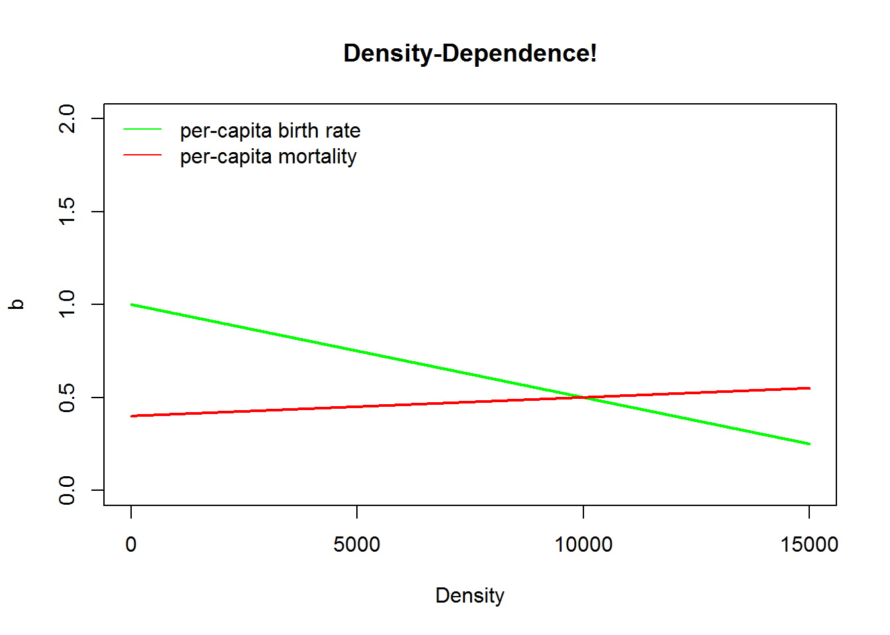

Lab 2: Density-dependence and more!
NRES 470/670
Spring 2024
In this lab we will have an opportunity to build more complex population models in InsightMaker. The main concept we cover in this lab is logistic population growth (the simplest model of “regulated”, density-dependent population growth), but we will also look at concepts like chaos.
First let’s do some math!
Mathematics of Density-Dependent population growth
Recall the basic population growth equation:
\(\Delta N = (b - d) \cdot N_t \qquad \text{(Eq. 1)}\)
Previously we considered b and d (that is, r) to be constant.
Now we want them to be functions of abundance! In particular, as abundance goes up, b goes down (becomes less favorable):
\(b = b_{max}-a*N_t \qquad \text{(Eq. 2)}\)
For the death rate d we might expect it to go up as abundance goes up (becomes less favorable):
\(d = d_{min}+c*N_t \qquad \text{(Eq. 3)}\)
The above equations nicely illustrate the meaning of density dependence. That is, one or more of the ‘population vital rates’ (b and d, which we previously modeled as constants in lab 1) are actually dependent on density!
Q: what do the a and c constants in the above equations really represent? You will have a chance to think more about this in the first exercise.
Now we can substitute the above equations into Eq. 1:
\(\Delta N = ((b_{max}-a*N_t) - (d_{min}+c*N_t)) \cdot N_t \qquad \text{(Eq. 4)}\)
Q: what is the maximum rate of growth in this case?
Using some tricks of algebra (see the Gotelli book), we can simplify this to:
\(\Delta N = r \cdot N_t \left [ 1 - \frac{a+c}{b-d} \cdot N_t \right ] \qquad \text{(Eq. 5)}\)
Which, if we define \(\frac{b-d}{a+c}\) as a constant, \(K\), we can re-write like this!
\(\Delta N = r \cdot N_t \cdot \left ( 1 - \frac{N}{K} \right ) \qquad \text{(Eq. 6)}\)
You should be aware that this equation is equivalent to \(\Delta N = r \cdot N_t \cdot \left ( \frac{K-N}{K} \right )\). You will see both versions used in the literature!
This is called the Logistic population growth equation. This lab will give us an opportunity to get to know this equation and its implications for population ecology!
Exercise 1: hypothetical mechanisms of density dependence
Please provide short answers to the following questions:
1a (short answer). Tell a plausible story about a wildlife population that experiences lower population growth rates as population size (density) increases (i.e., per-capita growth rate, r, decreases as abundance N increases). Please write ~2-3 sentences describing why the per-capita rate of population growth decreases as density increases. Be creative- this is a chance to think about the many possible mechanisms that could regulate wild populations in the real world. Try to be as realistic as possible- but hypothetical examples are okay too, as long as they are plausible!
NOTE: for the following two questions, you can use a web app like “Web whiteboard” to quickly and easily make and save sketches! You could also simply take a photo of a hand-drawing on paper, or use any drawing application (e.g., MS Paint). Either way, upload your sketches as an image in WebCampus.
1b (image upload). For the population you described in 1a above, please draw a graph illustrating how the per-capita growth rate, (r) changes with increasing population density. Specifically, draw a plot with the per-capita population growth rate (r) on the Y axis, and abundance (N) on the X axis. Indicate the location of carrying capacity (K) on the X axis, and the location of the maximum rate of population growth (\(r_{max}\)) on the Y axis.
1c (image upload). For the population you described in 1a above, please draw a graph illustrating how abundance (N) is likely to change over time (starting with very low abundance- much less than K). Specifically, draw a plot with abundance (N) on the Y axis and time (t, usually in years- but make sure to indicate the units on your x axis!) on the X axis. Assume the initial population size (N0, or abundance at time 0) is well below carrying capacity (N << K). Indicate carrying capacity (K) as a horizontal line on your figure.
1d (short answer). Referring to your answers to 1a (description of why per-capita growth rate declines with abundance for your specific example) and 1b (graph of how r changes as N increases for your specific example), please provide a short (2-3 sentence) justification for the shape of the curve you chose to draw to represent this density-dependence relationship (r vs N; answer to 1b) (i.e., if you drew a constant linear decline in r as N increases, justify why per-capita growth would fall by an equal amount for each new individual added to the population).
Exercise 2: Determining Peruvian anchovy optimal harvest levels!
In this exercise we will use InsightMaker to create a logistic growth model based on the collapse of the Peruvian anchovy fisheries (pages 45-47 in Gotelli).
As you develop the logistic growth model for the Peruvian anchovy stock in InsightMaker, you might want to refer to the in-class example for the population regulation lecture.
The Goal: identify the maximum sustainable yield! That is, we want to identify the maximum amount we can harvest each time step without causing the population to crash!
- In InsightMaker, open your basic exponential growth model (with explicit terms for birth and death rates, like you did in lab 1) and choose “Clone Insight” in the upper right corner to create a new copy that you can edit for this exercise. It should look something like this (see below; except for anchovies, not rabbits!). Note that it is not strictly necessary to have [Links] going from [Stocks] (e.g., Population) to connected [Flows] (e.g., Total Births and Total Deaths; InsightMaker assumes that flows may depend on the stocks they connect to).

- Now add the density-dependence components! Remember, the density-dependent birth and death rates in the logistic growth model can be expressed as the following:
\(b = b_{max} - aN\), aka density-dependent birth rate = most favorable (maximum) birth rate - (strength of density dependence * N)
\(d = d_{min} + cN\), aka density-dependent death rate = most favorable (minimum) death rate + (strength of density dependence * N)
You will need to add 4 new variables to your workspace- two to describe the linear relationship of birth rate as a function of population size, and another for the linear relationship of death rate as a function of population size. For example, birth rate will now be defined by two parameters: Max Birth Rate or equivalent (maximum birth rate, or \(b_{max}\)) and the slope of the density dependence relationship \(a\) (degree to which birth rate drops as new individuals are added to the population). Similarly, death rate will now be defined by the *Min Death Rate or equivalent (minimum death rate, or \(d_{min}\)) and the slope of the density dependence relationship \(c\) (degree to which death rate increases as new individuals are added to the population). Your final model should look something like this (except for anchovies, not box turtles!):

Here we visualize these relationships in R!
Density <- seq(0,100000,100) # create a sequence of numbers from 0 to 15000, representing a range of population densities
## CONSTANTS
b_max <- 1 # maximum reproduction (at low densities)
d_min <- 0.25 # minimum mortality (at low densities)
a <- 0.00001 # D-D terms
c <- 0.00003
b <- b_max - a*Density
d <- d_min + c*Density
options(scipen=100)
K <- (b_max-d_min)/(a+c) # compute carrying capacity
plot(Density,b,type="l",col="green",lwd=2,ylim=c(0,2),main="Density-Dependence!",xlim=c(0,50000),ylab="Vital rate (b or d)")
points(Density,d,type="l",col="red",lwd=2)
legend("topleft",col=c("green","red"),lty=c(1,1),legend=c("per-capita birth rate","per-capita mortality"),bty="n")
Next, you’ll need to update the equations to calculate the per-capita birth and death rates. Open the equation editor window for each variable, and enter the appropriate equations for the appropriate rates:
Enter starting values for your variables. Let’s use 100 for the initial Anchovy Population, 1 for the Ideal Birth Rate (maximum birth rate), 0.00001 for Density Dependence for birth rate, 0.25 for Ideal Death Rate, and 0.00003 for Density Dependence for death rate.
Use the Settings button to change the Simulation Length to 360 and the timescale to “Months” (run the model for 30 years, in time increments of 1 month). Click Simulate. You may need to click Configure in order to clean up your plot to just show Time on the x-axis and Anchovy Population on the y-axis. Run the model to see if it is working. You should see an S-shaped (logistic) curve when you visualize abundance over time
Set initial abundance equal to carrying capacity K (should be 18,750). Since the abundance is now initialized at carrying capacity (K), abundance should not change over time when you run the model.
Next, let’s add an additional source of mortality (right now, we have natural baseline mortality and density-dependent effects). This new source of mortality is commercial fishing! To add this source of mortality, create a new [Flow Out] from the Anchovy population. For now, let’s assume harvest is constant – that is, a constant number harvested each year, regardless of the size of the population.
One last thing before we play around with harvest rates: in the properties menu for the anchovy stock (abundance), set the property Allow Negatives to “No” (the default is “Yes”). We don’t want any possibility of over-harvest producing negative abundances!!
Finally, try to find the maximum sustainable yield (MSY) for this population. That is, find the maximum harvest rate that results in a sustainable population (i.e., that doesn’t cause the population to crash). To do this, try different rates of harvest- I recommend using increments of 100 at first, then narrowing down to smaller increments. Otherwise you might be here a while!!
HINT: you may want to create a slider bar so you can easily adjust the monthly harvest rate in this model.
HINT: you might want to increase the simulation length to make sure your harvest rate is really sustainable- that is, to make absolutely sure that the population won’t crash even many years into the future if you were to maintain that harvest level!
HINT: finally, you might want to configure your plot so that the y axis is always displaying zero as a lower bound- the reason this is helpful will hopefully be clear when you try it! To do this, set the “Min” parameter (under the “Y axis” header in the Configure menu in your plot) to 0.
QUESTIONS, Exercise 2:
2a (short answer, numeric input). What is the approximate maximum sustainable yield (MSY) for this population (i.e., the maximum number of individuals that can be harvested each month without causing the population to crash)?
2b (image upload). Please set the harvest rate to 100 more than the harvest rate you identified in 2a above (100 more than the maximum sustainable yield). Run this model in InsightMaker for 360 time steps (months) and upload the resulting plot of abundance over time.
2c (two numeric responses). What is the approximate equilibrium abundance when the population is harvested at the maximum sustainable harvest rate identified in 2a? Given carrying capacity \(K\) for this population is 18,750, express this new equilibrium as a fraction of carrying capacity (if the equilibrium abundance at MSY is 300 and K is 400, your answer would be 300/400 = 0.75).
2d (short answer- text and numeric). Does the maximum number of individuals you can sustainably harvest each month (the MSY, or maximum sustainable harvest level) change if you reduce the initial population size to 8,000 instead of 18,750? If so, what is the new MSY when you initialize abundance at 8,000?
2e (short answer). Does the equilibrium abundance at MSY (the equilibrium abundance when harvest rate is set to its maximum sustainable rate) represent a stable equilibrium? That is, does the total anchovy abundance return to the same equilibrium point even if you alter the initial anchovy abundance? Why? Why not? Justify your response.
HINT: start with initial abundance set to the equilibrium abundance at MSY (answer to question 2c) and harvest rate set to MSY (answer to 2a). Then, try making the initial abundance a little higher or lower and then re-run the model. Does abundance return to this equilibrium point (making it a stable equilibrium) – or does the system move to a new equilibrium (making it an unstable equilibrium)?]
2f (short answer). You are a fisheries manager in charge of managing this Peruvian anchovy stock. Do you recommend allowing harvest to occur at the maximum sustainable rate you determined in part 2a? Why or why not? More generally, is it sustainable to harvest a population at the maximum ‘sustainable’ rate? Consider that population vital rates (birth and death rates) in real systems exhibit stochasticity (random fluctuations) and that we never know population parameters (e.g., the intrinsic rate of growth, birth and death rates, density dependence parameters) with complete certainty.
2g (image upload). Using equation 6 as a starting point, try to analytically solve for Maximum Sustainable Yield (maximum number of individuals that can be harvested sustainably each time step)? Upload an image file to WebCampus showing your calculations (you can use a drawing app, a “web whiteboard” application, or upload a photo of your work).
HINT: \(r_{max}\) is the difference between the maximum birth rate and the minimum death rate!
HINT: the population should have its highest growth potential (potentially sustainable yield) at exactly one-half of K [e.g., K/2]).
HINT: at MSY, the net number of new individuals produced by the population per time step is equal to the number harvested. That is, \(\Delta N\) at MSY is equal to the harvest rate at MSY! (at any equilibrium point, the inputs flows are equal to the output flows)
NOTE: Your analytical solution for MSY (maximum sustainable harvest rate) should closely match the answer you found by trial-and-error in 2a.
Exercise 3: simpler logistic growth model
For this exercise we will set up a simpler density-dependent growth model in InsightMaker- this time, we will replicate Eq. 6 (above) in InsightMaker. Unlike the anchovy model, which modeled the population vital rates \(b\) and \(d\) explicitly, this “r formulation” of logistic growth will treat \(r\) (difference between \(b\) and \(d\)) as a single population vital rate.
Starting from a blank canvas in InsightMaker, add a [Stock] called Population. This population should be initialized at 10 individuals, and the Allow Negatives field in the properties window should be set to “No” (doesn’t make sense to have negative numbers of individuals in the population). Set Show Value Slider to “Yes”, and set the Slider Min to 0 and Slider Max to 1000 (with a slider step of 1).
Make a new [Flow In] to the Population, called Delta N. In the properties window, set Only Positive Rates to “No”. You should now see that the flow has an arrow on both ends. That is, this flow can either represent a [Flow In] or a [Flow Out]. It represents the change in Population each time step (delta N!), which can either be positive or negative! [NOTE: the tiny white triangle in one of the two arrow heads should be facing out from the population – this means that a positive value for the flow will mean an addition to the population and a negative value will be a subtraction from the population]
Make a new [Variable] called Max growth rate (also known as \(r_{max}\)), and set it at 0.15. Make a link from Max growth rate to Delta N. Set Show Value Slider to “Yes”, and set the Slider Min to 0 and Slider Max to 5.
Make a new [Variable] called Carrying capacity (also known as \(K\)), and set it at 650. Make a link from Carrying Capacity to Delta N.
Finally, open the equation editor for Delta N and enter the logistic growth equation (Eq. 6).
Run the simulation for 100 years (1-year time step) and make sure it behaves as expected- that is, it should exhibit logistic (S-shaped) growth and should level off at the carrying capacity (K) you specified.
QUESTIONS, Exercise 3:
3a (short answer). Is carrying capacity a stable equilibrium? Explain your reasoning.
HINT: remember, when testing if an equilibrium is stable or not, first initialize the population at the equilibrium point and verify that the population neither grows or declines. Next, alter the system by changing the initial abundance above and below the equilibrium, each time running the model to test whether or not it returns to the same equilibrium state!
Next, return the initial abundance to 10. Now start adjusting the value of Max Growth Rate. What do you notice as the maximum growth rate increases? Focus on the time series of population abundance over time. Can you identify different major changes in your ‘abundance over time’ plots as the growth rate increases from 1 to 5? You should be able to identify at least three unique patterns of population dynamics!
3b (image upload). Upload an image representing the first of the three unique patterns you identified.
3c (image upload). Upload an image representing the second of the three unique patterns you identified.
3d (image upload). Upload an image representing the third (last) of the three unique patterns you identified.
3e (short answer). Pick one of the three patterns you identified. Describe this pattern in words, and then provide the approximate range of values of maximum growth rate over which this pattern occurs (lower and upper bound for \(r_{max}\) for which you observe this pattern).
Checklist for Lab 2 completion
Your lab answers and pertinent figures should be submitted in the Lab 2 quiz in WebCampus.
Due Feb. 16 at midnight
- Exercise 1
- Short answer (1a.)
- Image upload (1b.)
- Image upload (1c.)
- Short answer (1d.)
- Short answer (1a.)
- Exercise 2
- Short answer (2a.)
- Image upload (2b.)
- Short answer (2c.)
- Short answer (2d.)
- Short answer (2e.)
- Short answer (2f.)
- Image upload (2g.)
- Exercise 3
- Short answer (3a.)
- Image upload (3b.)
- Image upload (3c.)
- Image upload (3d.)
- Short answer (3e.)
OPTIONAL: Exercise 4: delayed density-dependence! [optional- not part of the ‘official’ lab]
What happens when the effects of resource competition are delayed? In this case, the effects of competition (reduction in fitness) will not manifest immediately- but will emerge later down the road!
Let’s build on the previous model…
First, add a new [Variable] to the system, called Delayed Abundance, which will store an abundance value from a previous time step. Draw a new link from Population to Delayed abundance and from Delayed abundance to Delta N (you might need to curve your link arrow so it doesn’t overlap with other objects on your canvas).
Add a new [Variable] to the system, called Time Delay. Set Show Value Slider to “Yes”, and set the Slider Min to 0 and Slider Max to 5, and Slider Step to 1. Make a new link from Time Delay to Delayed Abundance
Open the equation window for Delayed abundance. This variable will store a previous value of Abundance, with the time delay set by Time Delay. To do this, use the following syntax (which you can access by clicking on “Delay” in the “Historical functions” menu within the equation editor):
Delay([Population], [Time delay], [Population])The second “Population” in this function is there just to help the simulation get started (at time-step zero, there are no previous values of Population, so InsightMaker will use the initial value of “Population” instead).
- Finally, modify the equation for Delta N so that Delayed abundance (not Population) is used in the density-dependent portion of the equation (1-N/K). Your equation should now look something like this:
[Population]*[Max growth rate]*(1-[Delayed abundance]/[Carrying Capacity])OPTIONAL QUESTIONS, Exercise 4: [NOTE: these are not part of the ‘official’ lab and do not count toward your Lab 2 grade]
4a (optional). Run the model with different values for the time delay. How does the system behave with a time delay? Do you see any similarities with exercise 3?
4b (optional). Parasitoid wasps help to keep many lepidopteran populations in check. The wasps lay their eggs in caterpillars, and the caterpillars end up dying a horrific death as the wasp larva grows. Wasp parasitism on caterpillar populations often results in delayed density-dependence – which in turn results in oscillations in caterpillar populations. Can you think of why this might be the case? Explain your reasoning.